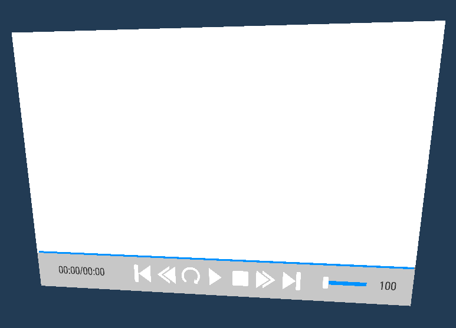
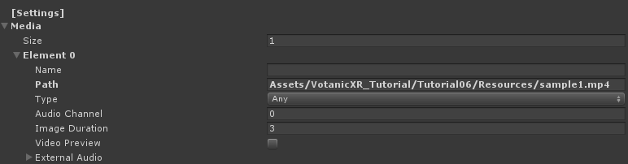

Adding Media
MediaPlayer
VGear have provided MediaPlayer feature with Virtual Reality environment, will be introduced below.
Right-click
vGear > GameObject > MediaPlayer.
Go to the component
Media Player (Script)of the child, select theMediain [Settings].
For Size, set the desired number of the media want to play. For each element below, set the media file path to
Path.
You can also set the whole directory to
Pathto play all the media in the folder and set theTypeto filter the undesired media type.
For
Path, we suggested to use external resources folder with path../Resources/*and place this media folder next to the build.
The media file supported for the MediaPlayer is shown below:
| Audio: | .wav, .ogg, |
| Image: | .jpg, .png, .tga, .exr, |
| Video: | .mp4, .mov, .avi, .mkv, .asf, .webm |
For each type of media you may set the setting such as image duration or audio channel.
Details of the Settings will be described in Detail of MediaPlayers.
MediaPlayer360
VGear have provided MediaPlayer360 for the 360 degree video and Images.
To add the prefab, right-click vGear > GameObject > MediaPlayer360.

Most components of the MediaPlayer360 is the same as MediaPlayer, settings of [360] about the 360 media will be described in Detail of MediaPlayers.